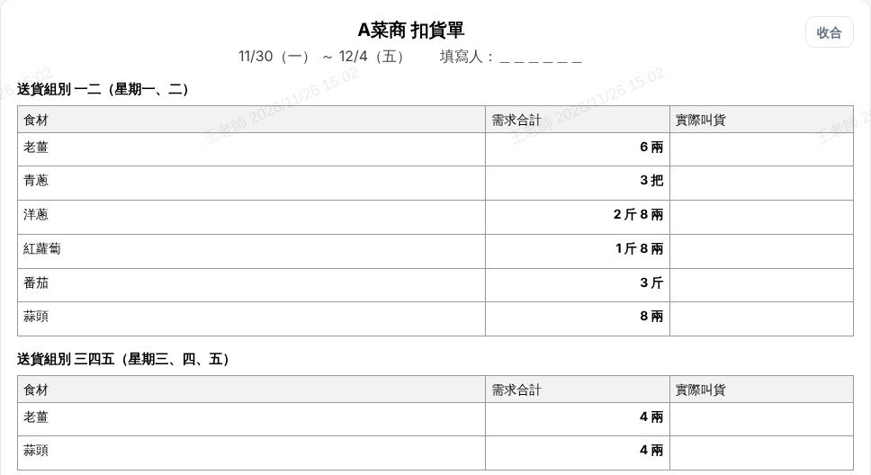

⚖️
單位自動換算
公克、斤兩、公斤、大匙小匙、顆數等自動換算，加總不再出錯。
依你的工作流程量身打造，以下功能可以自由挑選
公克、斤兩、公斤、大匙小匙、顆數等自動換算，加總不再出錯。
建立單價表，自動算出每張單、每項產品、每家廠商的成本。
把分店、各月份、各人的檔案自動合併成一份。
固定格式的週報、月報、圖表，按一下就產生。
依需求使用函數、樞紐分析或巨集，並附上簡單說明。
也可以做在 Google 試算表，多人同時使用、自動備份。
畫面為示範資料，按播放觀看

畫面為示範資料，點圖片可放大
老師用公克、大匙、顆數等各種單位訂食材，系統自動換算成廠商習慣的單位（例如 1500 g → 2 斤 8 兩）並加總，再用單價表估算每家廠商的金額，月結時和發票比對。
聊聊你現在的工作方式和遇到的問題。
提出功能規劃與報價，確認後才開始。
過程中讓你試用，隨時調整。
完成交付並教你使用，提供售後維護。
可以，一次性的資料整理、合併、清理都可以，依工作量報價。
要多人同時編輯、手機也要看，建議 Google 試算表；只有一台電腦用、資料量很大，Excel 也很好。可以一起討論。
會的，交付時會教你怎麼用，並附上簡單的操作說明。
可以先把姓名、金額等資料改成範例資料，確認做法後再套用到正式檔案。